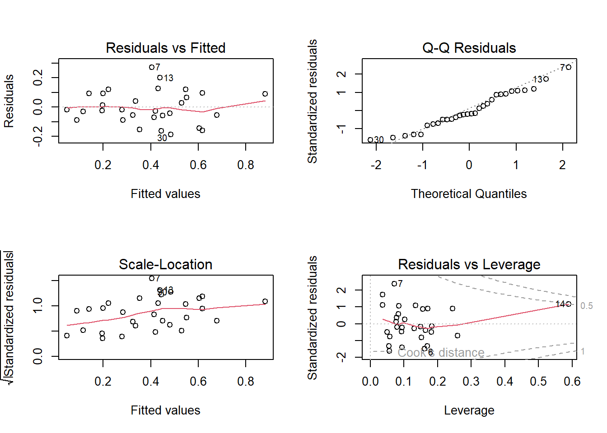

creeps <- read.table("data/creeps.txt"), header = T)Clase 5: Modelos lineales
Los modelos lineales son un tipo de modelo estadístico utilizado para predecir el valor de una variable de interés (la variable dependiente) a partir de uno o más variables predictivas (las variables independientes). Los modelos lineales se basan en la suposición de que la relación entre la variable dependiente y las variables independientes es lineal.
Para esta clase utilizaremos la base de datos creeps.txt, observe que esta base de datos est en formato .txt
Visualisemos nuestra base de datos
head(creeps) abund elevation road.dens stream.den mps.CS mps.S contagion conifer
1 0.02857143 635 19 29 17.19 58.43 55.79 56.61
2 0.43750000 533 1 28 22.54 61.98 67.14 64.02
3 0.37837838 396 11 32 10.04 22.39 70.66 49.20
4 0.55882353 342 18 32 17.93 35.87 46.25 31.41
5 0.34285714 369 30 30 11.80 16.97 69.44 29.30
6 0.28125000 327 34 38 11.91 25.01 67.52 5.54
saw pole sapling
1 0.71 93.61 0.00
2 80.15 19.85 0.00
3 43.44 49.18 0.00
4 57.23 30.75 0.00
5 24.46 33.24 27.15
6 39.89 28.69 17.40- elevation: promedio de la elevacion a lo largo del sitio
- road.dens: desidad de caminos en el sitio
- stream.den: desnisdad que quebradas en el sitio
- mps.CS: promedio de tamano de parche, tomando en cuenta composision y estructura de vegetacion
- mps.S: : promedio de tamano de parche, tomando en cuenta estructura de vegetacion
- contagion: una medidad de conectividad general del mosaico de parches basados en mps.s
- conifer: porcentaje de paisage compuesto de bosque de coniferas
- saw: porcentaje de paisage compuesto de large sawtimber (late-seral)
- pole: porcentaje de paisage compuesto de pole timber (mid-seral)
- sapling: porcentaje de paisage compuesto de saplings (early-seral)
La correlación es una medida que describe la relación entre dos variables. Existen diferentes tipos de correlación, dependiendo del tipo de variables que se están analizando. Algunos de los tipos más comunes son:
Correlación lineal: La correlación lineal mide la relación entre dos variables cuantitativas y se puede medir utilizando el coeficiente de correlación lineal (también conocido como el coeficiente de Pearson). Este coeficiente varía entre -1 y 1 y mide la intensidad y la dirección de la relación lineal entre las dos variables. Un valor de 1 indica una correlación perfectamente positiva, un valor de -1 indica una correlación perfectamente negativa y un valor de 0 indica ausencia de correlación.
Correlación no lineal: La correlación no lineal mide la relación entre dos variables cuantitativas o cualitativas y no sigue una relación lineal. Algunas de las métricas que se pueden utilizar para medir la correlación no lineal son el coeficiente de correlación de Spearman y el coeficiente de correlación de Kendall.
Correlacion de Pearson
cor.test(creeps$abund, creeps$saw)
Pearson's product-moment correlation
data: creeps$abund and creeps$saw
t = 6.7047, df = 28, p-value = 2.809e-07
alternative hypothesis: true correlation is not equal to 0
95 percent confidence interval:
0.5921819 0.8927700
sample estimates:
cor
0.7849797 Correlacion de Spearman
cor.test(creeps$abund, creeps$saw, method = "spearman")Warning in cor.test.default(creeps$abund, creeps$saw, method = "spearman"):
Cannot compute exact p-value with ties
Spearman's rank correlation rho
data: creeps$abund and creeps$saw
S = 838.15, p-value = 4.62e-08
alternative hypothesis: true rho is not equal to 0
sample estimates:
rho
0.8135367 Correlacion multile
library(ggplot2)
library(GGally)
MulplePlot <- ggpairs(creeps)
MulplePlotggsave("COR.png", plot = last_plot(), units = "cm", width = 20, height = 20, dpi = 450)Un modelo lineal simple es un modelo matemático que se utiliza para predecir una variable dependiente (también conocida como la variable objetivo o la variable respuesta) a partir de una única variable independiente (también conocida como la variable predictor o la variable explicativa). Este tipo de modelo se basa en la hipótesis de que la relación entre la variable dependiente y la variable independiente es lineal, es decir, que puede ser representada por una línea recta en un gráfico.
La forma general de un modelo lineal simple es:
\[y = β0 + β1 * x\]
donde:
- y es la variable dependiente
- x es la variable independiente
- β0 es el intercepto (el valor de y cuando x es igual a cero)
- β1 es el coeficiente de la variable independiente (la pendiente de la línea)
Ejemplo modelo lineal simple
Para realizar nuetro ejemplo utilizaremos la variable conifer para predecir nuestra variable respuesta abund
fit1 <- lm(abund ~ conifer, data= creeps)Para visualizar nuestro resultado podemos utilizar el comando summary()
summary(fit1)
Call:
lm(formula = abund ~ conifer, data = creeps)
Residuals:
Min 1Q Median 3Q Max
-0.38821 -0.14525 -0.03574 0.17354 0.57945
Coefficients:
Estimate Std. Error t value Pr(>|t|)
(Intercept) 0.4097130 0.1095886 3.739 0.000843 ***
conifer -0.0003403 0.0019764 -0.172 0.864533
---
Signif. codes: 0 '***' 0.001 '**' 0.01 '*' 0.05 '.' 0.1 ' ' 1
Residual standard error: 0.2279 on 28 degrees of freedom
Multiple R-squared: 0.001058, Adjusted R-squared: -0.03462
F-statistic: 0.02965 on 1 and 28 DF, p-value: 0.8645Podemos observar que el intercepto (β0) es 0.4097, el coeficiente (β1) es -0.0003403. Se puede apreciar que el valor p es mayor de 0.05 (alpha), por lo que no hay una relacion significativa entre conifer y abund. Asi mismo el R cuadrado es -0.03 un valor muy bajo por lo que este modelo simple solo explica un 3% de la varianza de abund
NOTA: Un modelo lineal puede dar un valor de R cuadrado negativo cuando el modelo es peor que una línea horizontal en la predicción de la variable dependiente (también conocida como la variable objetivo o la variable respuesta). Esto significa que el modelo no es capaz de explicar ninguna de la variabilidad de la variable dependiente.
Segundo ejemplo modelo lineal simple
Para este ejemplo utilizares la variable saw para predecir abund
fit2 <- lm(abund ~ saw, data= creeps)Observermos nuestros resultados
summary(fit2)
Call:
lm(formula = abund ~ saw, data = creeps)
Residuals:
Min 1Q Median 3Q Max
-0.22369 -0.09300 -0.01916 0.06843 0.40600
Coefficients:
Estimate Std. Error t value Pr(>|t|)
(Intercept) 0.0991039 0.0507636 1.952 0.061 .
saw 0.0058405 0.0008711 6.705 2.81e-07 ***
---
Signif. codes: 0 '***' 0.001 '**' 0.01 '*' 0.05 '.' 0.1 ' ' 1
Residual standard error: 0.1413 on 28 degrees of freedom
Multiple R-squared: 0.6162, Adjusted R-squared: 0.6025
F-statistic: 44.95 on 1 and 28 DF, p-value: 2.809e-07En este caso hay una relacion significativa de nuestras variables (p valor < 0.05), la relacion es positiva porque el coeficiente (β1) es 0.0058. El intercepto nos indica que cuando saw tiene el valor de 0, abund tendra el valor de 0.099. En este caso el R cuadrado es 0.06025 por lo que nuestro modelo explica un 60% de la varianza de abund.
Regression lineal
Ahora que hemos encontrado un “buen” modelo, podemos predicir el valor de abund utilizando la variable saw, para estos es necesario aplicar la regression lineal que se basa en la ecuacion.
\[y = β0 + β1 * x\]
Para aplicar la regresion lineal tenemos que conocer los valores de nuestros elementos, y = es el valor de abund a predecir β0 = 0.099 β1 = 0.0058 x = es el valor de saw que utilizaremos para predecir
Si queremos abund cuando tenemos un valor de 75 para saw, seria:
0.099 + 0.0058 * 75[1] 0.534Cuando saw vale 75, abund sera 0.534, estos de acuerdo a nuestro modelo fit2.
Si queremos predecir varios valores a la vez podemos crear una funcion para facilitarnos el trabajo
pre_saw <- function(saw){
0.099 + 0.0058 * saw
}probemos nuestra funcion
pre_saw(75)[1] 0.534Ahora con varios valores
pre_saw(1:10) [1] 0.1048 0.1106 0.1164 0.1222 0.1280 0.1338 0.1396 0.1454 0.1512 0.1570Un modelo lineal múltiple es un modelo matemático que se utiliza para predecir una variable dependiente (también conocida como la variable objetivo o la variable respuesta) a partir de varias variables independientes (también conocidas como las variables predictoras o las variables explicativas). Este tipo de modelo se basa en la hipótesis de que la relación entre la variable dependiente y las variables independientes es lineal y que no hay interacciones significativas entre las variables.
La forma general de un modelo lineal múltiple es:
y = β0 + β1 * x1 + β2 * x2 + … + βn * xn
donde:
- y es la variable dependiente
- x1, x2, …, xn son las variables independientes
- β0 es el intercepto (el valor de y cuando todas las variables independientes son iguales a cero)
- β1, β2, …, βn son los coeficientes de las variables independientes (la pendiente de la línea para cada variable independiente)
Ejemplo modelo lineal multiple
fit3 <- lm(abund ~ elevation + road.dens + saw, data= creeps)Revismeos nuestro resultado
summary(fit3)
Call:
lm(formula = abund ~ elevation + road.dens + saw, data = creeps)
Residuals:
Min 1Q Median 3Q Max
-0.22945 -0.08705 -0.01517 0.04711 0.30784
Coefficients:
Estimate Std. Error t value Pr(>|t|)
(Intercept) 0.0348019 0.1362319 0.255 0.8004
elevation -0.0001680 0.0002109 -0.796 0.4331
road.dens 0.0055739 0.0032486 1.716 0.0981 .
saw 0.0064540 0.0009685 6.664 4.54e-07 ***
---
Signif. codes: 0 '***' 0.001 '**' 0.01 '*' 0.05 '.' 0.1 ' ' 1
Residual standard error: 0.137 on 26 degrees of freedom
Multiple R-squared: 0.6649, Adjusted R-squared: 0.6263
F-statistic: 17.2 on 3 and 26 DF, p-value: 2.329e-06Segundo ejemplo modelo lineal multiple
fit4 <- lm(abund ~ elevation + road.dens + saw + stream.den + sapling, data= creeps)Revismeos nuestro resultado
summary(fit4)
Call:
lm(formula = abund ~ elevation + road.dens + saw + stream.den +
sapling, data = creeps)
Residuals:
Min 1Q Median 3Q Max
-0.19778 -0.06398 -0.01793 0.06720 0.25905
Coefficients:
Estimate Std. Error t value Pr(>|t|)
(Intercept) -0.3715272 0.1811390 -2.051 0.05133 .
elevation -0.0001127 0.0001942 -0.580 0.56705
road.dens 0.0022532 0.0035137 0.641 0.52744
saw 0.0058230 0.0008848 6.581 8.31e-07 ***
stream.den 0.0151123 0.0051360 2.942 0.00711 **
sapling -0.0018429 0.0033595 -0.549 0.58837
---
Signif. codes: 0 '***' 0.001 '**' 0.01 '*' 0.05 '.' 0.1 ' ' 1
Residual standard error: 0.1214 on 24 degrees of freedom
Multiple R-squared: 0.7571, Adjusted R-squared: 0.7065
F-statistic: 14.96 on 5 and 24 DF, p-value: 1.047e-06En estos modelo el fit3 explica un 0.6263, mientras el modelo fit4 explica un 0.7065.
Un modelo de regresión lineal con interacciones es un modelo matemático que se utiliza para predecir una variable dependiente (también conocida como la variable objetivo o la variable respuesta) a partir de varias variables independientes (también conocidas como las variables predictoras o las variables explicativas), considerando interacciones entre ellas. Una interacción entre dos variables se refiere a un efecto de una variable sobre la otra que depende del nivel de la otra variable.
La forma general de un modelo de regresión lineal con interacciones es:
y = β0 + β1 * x1 + β2 * x2 + β3 * x1 * x2 + β4 * x3 + … + βn * xn
donde:
- y es la variable dependiente
- x1, x2, x3, …, xn son las variables independientes
- β0 es el intercepto (el valor de y cuando todas las variables independ
Ejemplo modelo lineal con interaccion
fit5 <- lm(abund ~ saw * mps.S, data= creeps)Revismeos nuestro resultado
summary(fit5)
Call:
lm(formula = abund ~ saw * mps.S, data = creeps)
Residuals:
Min 1Q Median 3Q Max
-0.23207 -0.08394 -0.01518 0.08675 0.37646
Coefficients:
Estimate Std. Error t value Pr(>|t|)
(Intercept) -3.909e-02 1.027e-01 -0.380 0.707
saw 7.811e-03 1.587e-03 4.921 4.13e-05 ***
mps.S 2.317e-03 1.622e-03 1.429 0.165
saw:mps.S -2.750e-05 1.773e-05 -1.551 0.133
---
Signif. codes: 0 '***' 0.001 '**' 0.01 '*' 0.05 '.' 0.1 ' ' 1
Residual standard error: 0.1401 on 26 degrees of freedom
Multiple R-squared: 0.6494, Adjusted R-squared: 0.609
F-statistic: 16.06 on 3 and 26 DF, p-value: 4.15e-06Ya que el modelo con interaccion es un poco complicado de explicar, realizaremos un grfaico
library(sjPlot)Learn more about sjPlot with 'browseVignettes("sjPlot")'.plot_model(fit5, "int")La selección del modelo más adecuado para un conjunto de datos es un proceso importante en el análisis de datos. Existen diferentes criterios que se pueden utilizar para seleccionar el modelo más adecuado, dependiendo del objetivo del análisis y del tipo de datos que se tienen. Algunos de los criterios más comunes son:
Simplicidad: Un modelo más simple es más fácil de interpretar y generalizar, pero puede no ser tan preciso como un modelo más complejo.
Precisión: Un modelo más preciso es capaz de explicar mejor la variabilidad de la variable dependiente. Se pueden utilizar métricas como el coeficiente de determinación (R cuadrado) o el error cuadrático medio (MSE) para evaluar la precisión de un modelo.
Bondad de ajuste: Un modelo con una bondad de ajuste adecuada se ajusta bien a los datos, pero también tiene capacidad de generalización a datos futuros. Se pueden utilizar métricas como el AIC o el BIC para evaluar la bondad de ajuste de un modelo.
Interpretabilidad: Un modelo más fácil de interpretar es más útil para comprender las relaciones entre las variables y para hacer predicciones basadas en ellas.
El AIC (Information Criterion) es una métrica que se utiliza para evaluar la bondad de ajuste de diferentes modelos de regresión y seleccionar el modelo más adecuado. El AIC se basa en la idea de que un modelo más preciso debe tener un menor AIC, pero también debe tener una suficiente capacidad de generalización a datos futuros.
La fórmula del AIC es:
\[AIC = 2 * k - 2 * ln(L)\]
donde:
- k es el número de parámetros del modelo
- ln(L) es el logaritmo natural del valor de verosimilitud del modelo
A continuacion utilizares el Criterio de Informacion de Akaike (AIC) para identificar el modelo mas adeacuado
Primero debemos de proponer los modelos candidatos
fit1 <- lm(abund ~ elevation, data= creeps)
fit2 <- lm(abund ~ elevation + road.dens, data= creeps)
fit3 <- lm(abund ~ road.dens + saw + stream.den, data= creeps)
fit4 <- lm(abund ~ saw + sapling, data= creeps)
fit5 <- lm(abund ~ saw + mps.S, data= creeps)
fit6 <- lm(abund ~ saw * mps.S, data= creeps)Ahora utilizaremos el comando aictab() del paquete AICcmodavg para identificar nuestro modelo mas adecuado.
library(AICcmodavg)
Modelos_Candidatos <- list(fit1, fit2, fit3, fit4, fit5, fit6)
Nombres <- c("fit1", "fit2", "fit3", "fit4", "fit5", "fit6")
aictab(Modelos_Candidatos, Nombres, sort = TRUE)
Model selection based on AICc:
K AICc Delta_AICc AICcWt Cum.Wt LL
fit3 5 -34.51 0.00 0.98 0.98 23.51
fit5 4 -24.82 9.69 0.01 0.99 17.21
fit4 4 -24.76 9.75 0.01 0.99 17.18
fit6 5 -24.58 9.94 0.01 1.00 18.54
fit1 3 -0.66 33.85 0.00 1.00 3.79
fit2 4 1.05 35.57 0.00 1.00 4.27Los modelos lineales se basan en ciertos supuestos acerca de los datos y la relación entre la variable dependiente y las variables independientes. Estos supuestos son:
Linealidad: La relación entre la variable dependiente y las variables independientes es lineal. Esto significa que el cambio en la variable dependiente es proporcional al cambio en las variables independientes.
Homoscedasticidad: La varianza de la variable dependiente es constante a lo largo de los diferentes valores de las variables independientes.
Independencia de errores: Los errores (la diferencia entre el valor real y el valor predecido) son independientes entre sí.
Normalidad de errores: Los errores siguen una distribución normal.
Es importante tener en cuenta que si estos supuestos no se cumplen, los resultados del modelo lineal pueden ser inexactos o poco fiables. Por lo tanto, es importante verificar que estos supuestos se cumplen antes de utilizar un modelo lineal.
En R existen diferentes formas de evaluar los supuestos del modelo lineal, por ejemplo podemos utilizar el comando plot().
par(mfrow = c(2,2))
plot(fit3)
Pero los graficos resultantes del comando plot() pueden ser muy subjetivos, por eso utilizaremos el paquete DHARMa el cual contiene comando utiles para validar nuestro modelo.
library(DHARMa)This is DHARMa 0.4.6. For overview type '?DHARMa'. For recent changes, type news(package = 'DHARMa')Normalidad y homogeneidad de residuales
testResiduals(fit3)$uniformity
Asymptotic one-sample Kolmogorov-Smirnov test
data: simulationOutput$scaledResiduals
D = 0.11867, p-value = 0.7921
alternative hypothesis: two-sided
$dispersion
DHARMa nonparametric dispersion test via sd of residuals fitted vs.
simulated
data: simulationOutput
dispersion = 0.90827, p-value = 0.792
alternative hypothesis: two.sided
$outliers
DHARMa outlier test based on exact binomial test with approximate
expectations
data: simulationOutput
outliers at both margin(s) = 0, observations = 30, p-value = 1
alternative hypothesis: true probability of success is not equal to 0.007968127
95 percent confidence interval:
0.0000000 0.1157033
sample estimates:
frequency of outliers (expected: 0.00796812749003984 )
0 $uniformity
Asymptotic one-sample Kolmogorov-Smirnov test
data: simulationOutput$scaledResiduals
D = 0.11867, p-value = 0.7921
alternative hypothesis: two-sided
$dispersion
DHARMa nonparametric dispersion test via sd of residuals fitted vs.
simulated
data: simulationOutput
dispersion = 0.90827, p-value = 0.792
alternative hypothesis: two.sided
$outliers
DHARMa outlier test based on exact binomial test with approximate
expectations
data: simulationOutput
outliers at both margin(s) = 0, observations = 30, p-value = 1
alternative hypothesis: true probability of success is not equal to 0.007968127
95 percent confidence interval:
0.0000000 0.1157033
sample estimates:
frequency of outliers (expected: 0.00796812749003984 )
0 colinealidad
La colinealidad es un problema que puede surgir en el análisis de regresión cuando dos o más variables independientes están altamente correlacionadas entre sí. Esto puede ocurrir cuando las variables son muy similares o cuando son medidas de manera diferente pero representan el mismo concepto. La colinealidad puede dificultar la interpretación del modelo y afectar la precisión de las predicciones.
Para detectar la colinealidad en R, puede utilizar la función vif() del paquete car. Esta función calcula el factor de inflación de la varianza (VIF) para cada variable del modelo de regresión y permite evaluar la colinealidad entre ellas. El VIF de una variable mide cuánto aumenta la varianza de las estimaciones de los coeficientes debido a la colinealidad con otras variables. Valores altos de VIF indican colinealidad y valores bajos indican independencia.
library(car)Loading required package: carDatavif(fit3) road.dens saw stream.den
1.560884 1.337186 1.237161 Grafico del modelo
Con ggplot2
library(ggplot2)
ggplot(data= creeps, aes(x = saw, y= abund)) +
geom_point()+
geom_smooth(method = lm)`geom_smooth()` using formula = 'y ~ x'ggsave("lm.png", plot = last_plot(), units = "cm", width = 12, height = 8, dpi = 450)`geom_smooth()` using formula = 'y ~ x'